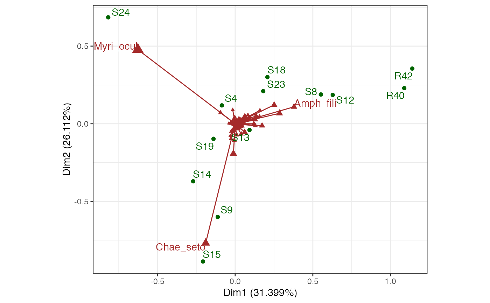

Marine species from sea-bed (benthic) samples
benthos.RdCounts of 92 benthic species at 13 sites in the North Sea following an oil exploration.
data(benthos)
Format
A matrix.
Source
Greenacre (2010).
References
Greenacre MJ (2010) Biplots in Practice. Fundacion BBVA, ISBN: 978-84-923846. https://www.fbbva.es/microsite/multivariate-statistics/biplots.html
Examples
# Confer inertia in CA between rows and columns of benthic sample data data(benthos) benthos %>% ca::ca() %>% as_tbl_ord() %>% print() -> benthos_ca#> # A tbl_ord of class 'ca': (92 x 12) x (13 x 12)' #> # 12 coordinates: Dim1, Dim2, ..., Dim12 #> # #> # Rows: [ 92 x 12 | 0 ] #> Dim1 Dim2 Dim3 ... | #> | #> 1 -1.17 0.895 -0.140 | #> 2 -0.552 -2.23 -0.359 ... | #> 3 -0.0406 -0.689 0.687 | #> 4 1.22 0.287 -0.700 | #> 5 0.312 0.142 -0.137 | #> #> # #> # Columns: [ 13 x 12 | 0 ] #> Dim1 Dim2 Dim3 ... | #> | #> 1 -0.173 0.262 -0.376 | #> 2 1.11 0.417 1.52 ... | #> 3 -0.226 -1.33 -0.297 | #> 4 1.27 0.411 1.37 | #> 5 0.186 -0.0884 0.568 | #># Reproduce Exhibit 8.3 benthos_ca %>% confer_inertia("colprincipal") %>% ggbiplot(aes(label = .name)) + theme_bw() + geom_rows_point(color = "brown", size = 1) + geom_cols_text(color = "darkgreen")# Reproduce Exhibit 8.4 benthos_ca %>% augment(.matrix = "rows") %>% transmute_rows(mass = .mass, sqrt_mass = sqrt(.mass)) %>% confer_inertia("colprincipal") %>% ggbiplot(aes(label = .name), scale_rows = "sqrt_mass") + theme_bw() + geom_rows_vector(color = "brown", arrow = NULL) + geom_rows_point(aes(size = mass), color = "brown", shape = 17) + scale_size_continuous(range = c(1, 4), guide = "none") + geom_rows_text( stat = "chull", color = "brown", hjust = "outward", vjust = "outward" ) + geom_cols_point(color = "darkgreen") + geom_cols_text_repel(color = "darkgreen", min.segment.length = 2)